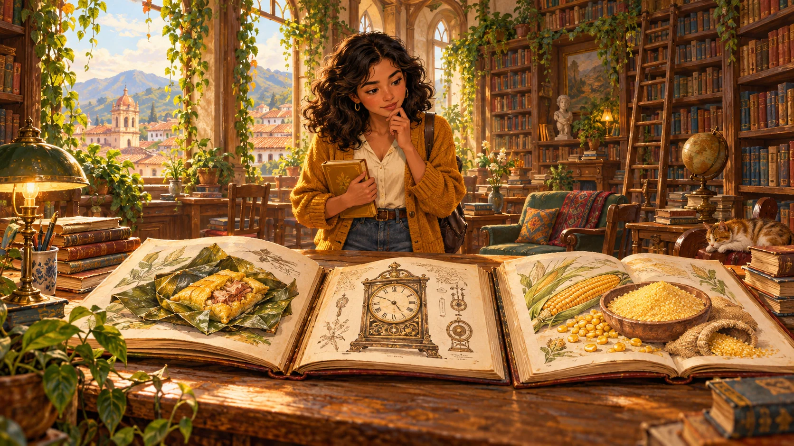

66.52 %tamal24.47 %estaba9.00 %masacotudo
UNA HISTORIA ILUSTRADA PARA ENTENDER LA ATENCIÓN
Una palabra.
Una biblioteca
de contexto.
Antes de las fórmulas, mira lo que ocurre.
Consultas, libros y un cuaderno que cambia al leer.
Arrastra para explorar · Doble clic para volver
Pulsa reproducir. La explicación y los dibujos avanzan juntos.
Espacio: pausa · Flechas: retroceder / avanzar · F: pantalla completa